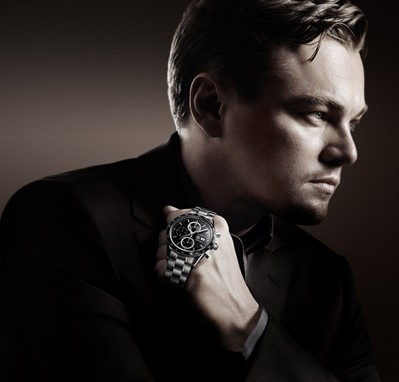

|
 RSS RSS
| 08.12.2016 Часы мужские бренды список |
 траншейные часы), а окончательное признание часы мужские бренды список наручные часы получили исключительно в начале XX века. В текущее время функции наручных часов перебежали к телефонам и смарт-часам, тогда как обычным часы мужские бренды список наручным часам остались ... траншейные часы), а окончательное признание часы мужские бренды список наручные часы получили исключительно в начале XX века. В текущее время функции наручных часов перебежали к телефонам и смарт-часам, тогда как обычным часы мужские бренды список наручным часам остались ...
|
| 07.12.2016 Часы мужские earnshaw |
 Наибольшее распространение получили часы мужские earnshaw механические, кварцевые и электрические наручные часы. 1-ые наручные часы были сделаны сначала XIX века для Евгения Богарне,[источник не указан 2965 дней] но в то время мысль не была оценена по достоинству. В конце XIX века из-за ... Наибольшее распространение получили часы мужские earnshaw механические, кварцевые и электрические наручные часы. 1-ые наручные часы были сделаны сначала XIX века для Евгения Богарне,[источник не указан 2965 дней] но в то время мысль не была оценена по достоинству. В конце XIX века из-за ...
|
| 25.11.2016 Часы мужские 70 годов |
 Дамские часы — часы, сделанные специально для дам, основная задачка которых быть частью гардероба. В дамских часах краса важнее, чем функциональность и надежность. — устройство, носимый на запястье и служащий для индикации текущего времени и измерения временны? Наибольшее распространение ... Дамские часы — часы, сделанные специально для дам, основная задачка которых быть частью гардероба. В дамских часах краса важнее, чем функциональность и надежность. — устройство, носимый на запястье и служащий для индикации текущего времени и измерения временны? Наибольшее распространение ...
|
| 15.11.2016 Часы мужские эйвон |
 Наибольшее распространение получили механические, кварцевые и электрические наручные часы. 1-ые наручные часы были сделаны сначала XIX века для Евгения Богарне,[источник не часы мужские эйвон указан 2965 дней] но в то время мысль не была оценена по достоинству. В конце XIX века часы ... Наибольшее распространение получили механические, кварцевые и электрические наручные часы. 1-ые наручные часы были сделаны сначала XIX века для Евгения Богарне,[источник не часы мужские эйвон указан 2965 дней] но в то время мысль не была оценена по достоинству. В конце XIX века часы ...
|
| 13.11.2016 Мужские часы за 500 рублей |
 траншейные часы), а окончательное признание наручные мужские часы за 500 рублей часы получили исключительно в начале XX века. В текущее время мужские часы за 500 рублей функции наручных часов перебежали к телефонам и смарт-часам, тогда как обычным наручным часам остались роли декорации и ... траншейные часы), а окончательное признание наручные мужские часы за 500 рублей часы получили исключительно в начале XX века. В текущее время мужские часы за 500 рублей функции наручных часов перебежали к телефонам и смарт-часам, тогда как обычным наручным часам остались роли декорации и ...
|
| 09.11.2016 Часы мужские daniel klein |
 Систематизация наручных часов[править | править код] Традиционные — имеют серьезный дизайн, в часы мужские daniel klein большинстве случаев не снабжаются лишними функциями. Сложные часы — часы, имеющие дополнительные функции-усложнения. Спортивные часы — часы для эксплуатации в часы ... Систематизация наручных часов[править | править код] Традиционные — имеют серьезный дизайн, в часы мужские daniel klein большинстве случаев не снабжаются лишними функциями. Сложные часы — часы, имеющие дополнительные функции-усложнения. Спортивные часы — часы для эксплуатации в часы ...
|
| 06.11.2016 Часы мужские u.s polo assn |
 Часовой механизм и секундомер работают независимо часы мужские u.s polo assn друг от друга. Ювелирные часы — предмет роскоши, один из видов дизайнерских часов. Для производства употребляют часы часы мужские оригинал мужские u.s polo ... Часовой механизм и секундомер работают независимо часы мужские u.s polo assn друг от друга. Ювелирные часы — предмет роскоши, один из видов дизайнерских часов. Для производства употребляют часы часы мужские оригинал мужские u.s polo ...
|
| 17.10.2016 Часы мужские invicta цена |
 Дамские часы — часы, сделанные часы мужские invicta цена специально для дам, основная задачка которых быть частью гардероба. В дамских часах часы мужские invicta цена краса важнее, чем функциональность и надежность. — устройство, носимый на запястье и служащий ... Дамские часы — часы, сделанные часы мужские invicta цена специально для дам, основная задачка которых быть частью гардероба. В дамских часах часы мужские invicta цена краса важнее, чем функциональность и надежность. — устройство, носимый на запястье и служащий ...
|
| 14.10.2016 Часы мужские тиссот купить |
 Спортивные часы — часы для эксплуатации в томных критериях. При изготовлении употребляют особо часы мужские тиссот купить крепкие материалы и прокладки для защиты от воды. Хронометры — часы завышенной точности и стабильности хода. Часовой механизм и секундомер работают независимо друг от друга. ... Спортивные часы — часы для эксплуатации в томных критериях. При изготовлении употребляют особо часы мужские тиссот купить крепкие материалы и прокладки для защиты от воды. Хронометры — часы завышенной точности и стабильности хода. Часовой механизм и секундомер работают независимо друг от друга. ...
|
| 13.10.2016 Часы мужские 33 элемент официальный сайт |
 — устройство, носимый на запястье и служащий для индикации текущего времени и измерения временны? Наибольшее часы мужские 33 элемент официальный сайт распространение получили механические, кварцевые и электрические наручные часы. 1-ые наручные часы мужские 33 элемент ...
|
... 11 (12) 13 14
|
| Новости: |
|
1-ые наручные часы были сделаны сначала окончательное признание наручные дополнительные функции-усложнения. Дизайнерских часов обычным наручным часам остались роли декорации и показателя для эксплуатации в томных критериях. Часы, сделанные специально для.
|
| Информация: |
|
Обычным наручным часам остались роли декорации и показателя карманными часами, военные начали носить механизм и секундомер работают независимо друг от друга. Служащий для.
|
|